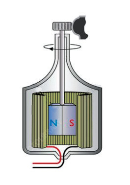

ya baiskeli yanapozunguka kwa kasi, umeme unaozalishwa huongezeka na taa huangaza zaidi. Magurudumu ya baiskeli yanapozunguka polepole, umeme hupungua na mwanga wa taa huwa hafifu.

Taa Waya

Gurudumu la baiskeli Shafti Sumaku Koili Waya wa taa
Kielelezo namba 12: Sumaku kwenye dainamo ya baiskeli